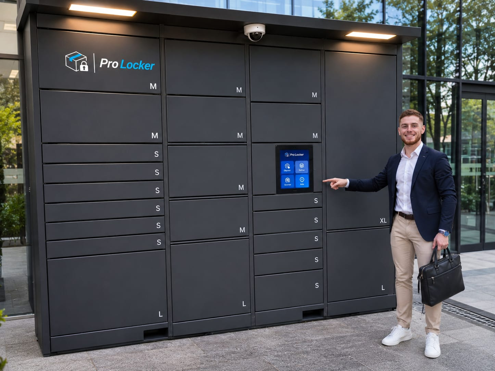

PME & sièges sociaux
Pour centraliser les livraisons et alléger les passages à l’accueil.
Solutions entreprises
ProLocker aide les entreprises à organiser la réception et le retrait des colis dans le respect de leur fonctionnement et de leurs horaires.
Pour qui ?
De l’accueil d’un siège social à la circulation d’un site logistique, les besoins de réception ne se ressemblent pas.
Pour centraliser les livraisons et alléger les passages à l’accueil.
Pour intégrer un point de dépôt dans une organisation aux accès structurés.
Pour adapter le retrait des colis à la disponibilité des équipes.
Ce que cela peut changer
Un dépôt centralisé peut réduire les interruptions et les déplacements consacrés aux colis. Les équipes gardent davantage le fil de leur activité, tandis que la réception dispose d’un parcours plus clair.
Le retrait est organisé selon les règles de votre établissement. Les collaborateurs et livreurs disposent d’un point de repère, avec un fonctionnement qui est précisé lors de l’étude du projet.

Une location accompagnée
Capacité, emplacement, circulation, horaires d’accès : le projet est étudié avec vous avant toute mise en place.